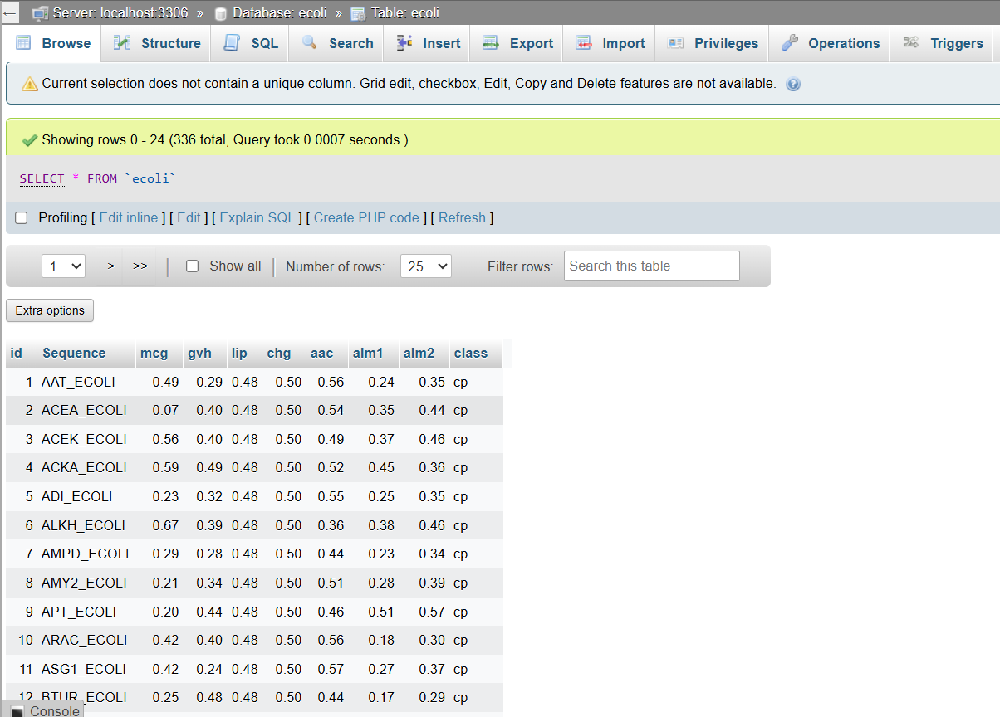
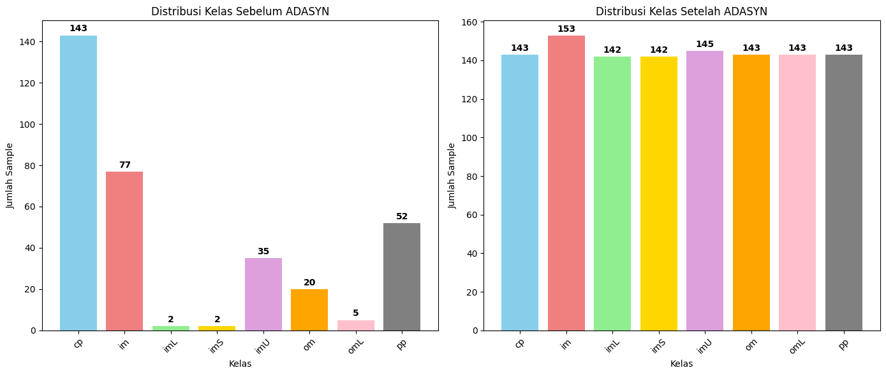
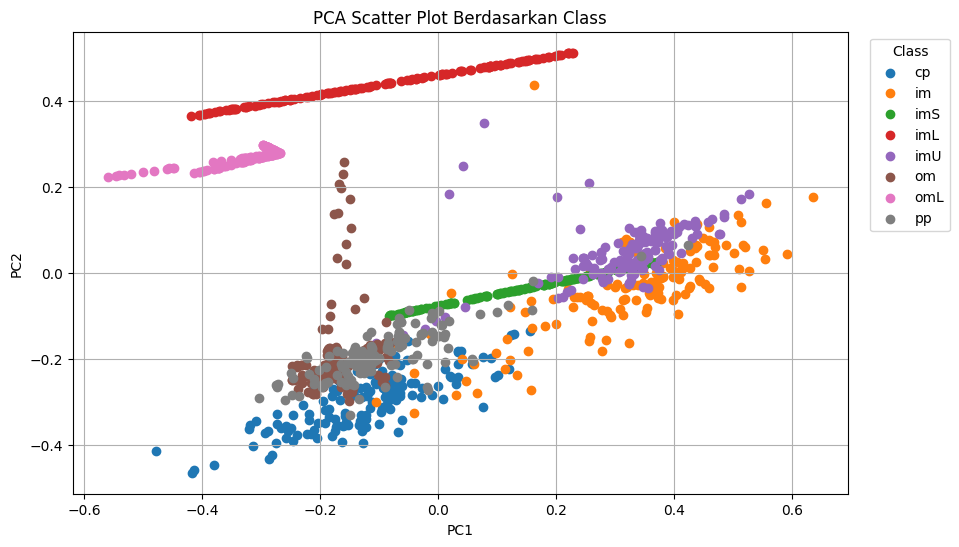
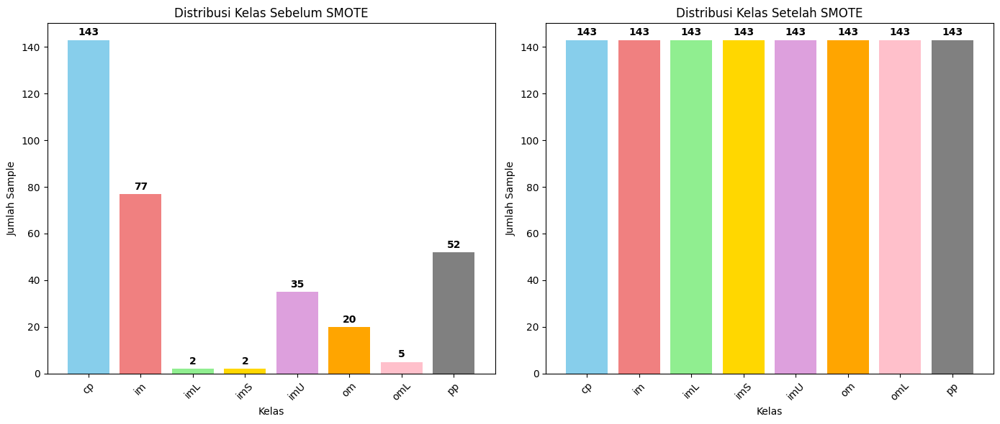
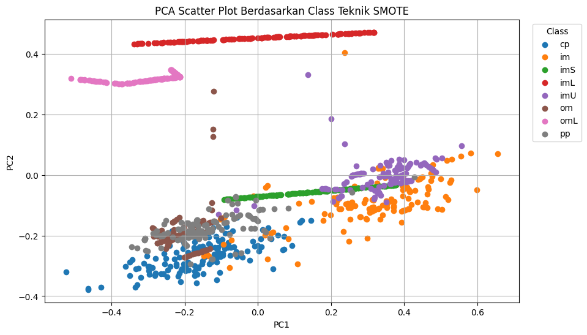
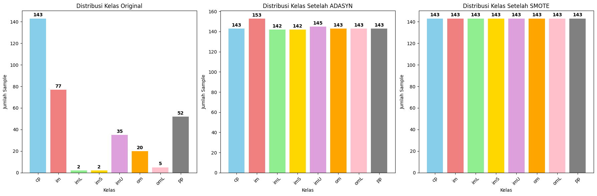
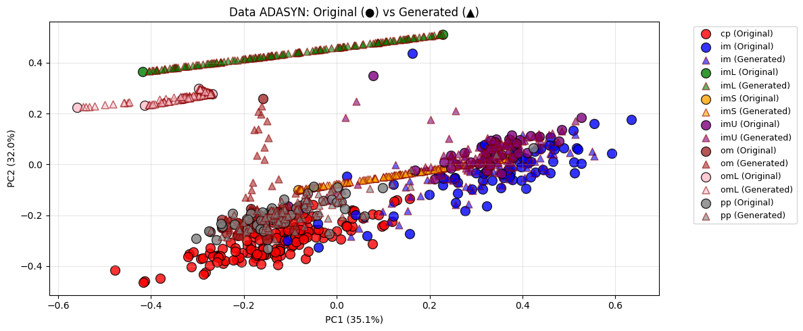
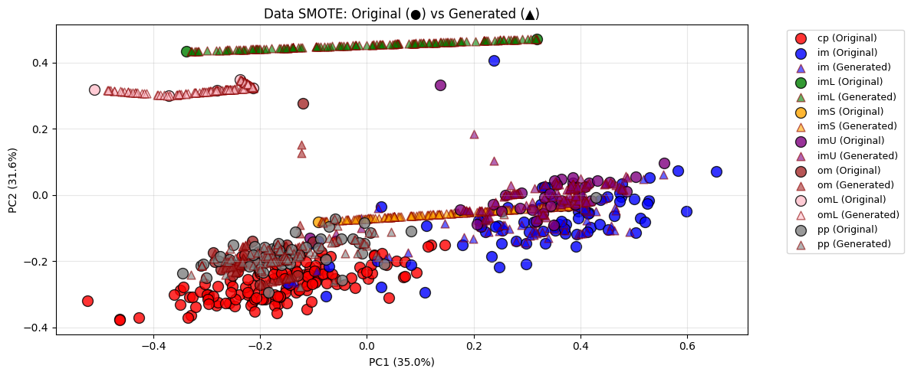
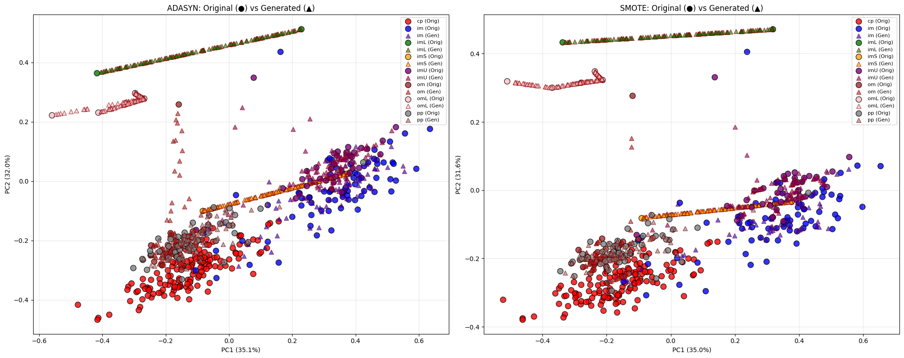

Penyeimbangan Dataset Ecoli#
1. Dataset Ecoli Dari UCI Disimpan Ke Database Mysql#
1.1 Dataset Ecoli Di Mysql#
Berikut adalah hasil dataset ecoli yang sudah di masukkan ke database Mysql:

1.2 Installasi Dan Import Library Yang Dibutuhkan#
%pip install pymysql
%pip install imbalanced-learn
Requirement already satisfied: pymysql in c:\python311\lib\site-packages (1.1.2)
Note: you may need to restart the kernel to use updated packages.
Requirement already satisfied: imbalanced-learn in c:\python311\lib\site-packages (0.14.0)
Requirement already satisfied: numpy<3,>=1.25.2 in c:\python311\lib\site-packages (from imbalanced-learn) (1.26.4)
Requirement already satisfied: scipy<2,>=1.11.4 in c:\python311\lib\site-packages (from imbalanced-learn) (1.11.4)
Requirement already satisfied: scikit-learn<2,>=1.4.2 in c:\python311\lib\site-packages (from imbalanced-learn) (1.4.2)
Requirement already satisfied: joblib<2,>=1.2.0 in c:\python311\lib\site-packages (from imbalanced-learn) (1.3.2)
Requirement already satisfied: threadpoolctl<4,>=2.0.0 in c:\python311\lib\site-packages (from imbalanced-learn) (3.6.0)
Note: you may need to restart the kernel to use updated packages.
import pandas as pd
import numpy as np
import matplotlib.pyplot as plt
from sklearn.decomposition import PCA
from sklearn.preprocessing import StandardScaler
import pymysql
from imblearn.over_sampling import ADASYN, SMOTE
from collections import Counter
1.3 Koneksi Ke DataBase Mysql#
try:
conn = pymysql.connect(
host='localhost',
user='root',
password='28maret2005',
database='ecoli'
)
df = pd.read_sql("SELECT * FROM ecoli", conn)
conn.close()
print("Data berhasil dimuat!")
# Convert ke CSV
df.to_csv('data_ecoli_original.csv', index=False)
print(f"✅ Data disimpan ke 'data_ecoli_original.csv'")
print(f" Shape: {df.shape}")
except Exception as e:
print(f"Error: {e}")
df = None
Error: (2003, "Can't connect to MySQL server on 'localhost' ([WinError 10061] No connection could be made because the target machine actively refused it)")
1.4 Visualisasi Distribusi Kelas#
if df is not None:
class_counts = df['class'].value_counts().sort_index()
print("Distribusi kelas:")
for class_name, count in class_counts.items():
percentage = (count / len(df)) * 100
print(f"{class_name}: {count} samples ({percentage:.1f}%)")
# Plot sederhana
plt.figure(figsize=(12, 5))
# 1. Bar Chart
plt.subplot(1, 2, 1)
colors = ['skyblue', 'lightcoral', 'lightgreen', 'gold', 'plum', 'orange', 'pink', 'gray']
bars = plt.bar(class_counts.index, class_counts.values, color=colors[:len(class_counts)])
plt.xlabel('Kelas')
plt.ylabel('Jumlah Sample')
plt.title('Distribusi Kelas E.coli')
plt.xticks(rotation=45)
# Tambah label angka di atas bar
for bar, count in zip(bars, class_counts.values):
plt.text(bar.get_x() + bar.get_width()/2, bar.get_height() + 1,
str(count), ha='center', va='bottom', fontweight='bold')
# 2. Pie Chart
plt.subplot(1, 2, 2)
plt.pie(class_counts.values, labels=class_counts.index, autopct='%1.1f%%',
colors=colors[:len(class_counts)], startangle=90)
plt.title('Persentase Distribusi Kelas')
plt.tight_layout()
plt.show()
# Status keseimbangan
max_pct = (class_counts.max() / len(df)) * 100
min_pct = (class_counts.min() / len(df)) * 100
ratio = max_pct / min_pct
print(f"\nKelas terbanyak: {class_counts.idxmax()} ({max_pct:.1f}%)")
print(f"Kelas tersedikit: {class_counts.idxmin()} ({min_pct:.1f}%)")
print(f"Rasio ketidakseimbangan: {ratio:.1f}:1")
if ratio > 3:
print("Status: TIDAK SEIMBANG")
else:
print("Status: RELATIF SEIMBANG")
else:
print("Data tidak tersedia!")
Data tidak tersedia!
2. Tampilkan data dalam scatter plot menggunakan PCA. (PCA mentransformasi data menjadi dimensi rendah (2))#
if df is not None:
print(f"Data shape: {df.shape}")
print(f"Columns: {df.columns.tolist()}")
feature_columns = ['mcg', 'gvh', 'lip', 'chg', 'aac', 'alm1', 'alm2']
X = df[feature_columns]
y = df['class']
pca = PCA(n_components=2)
X_pca = pca.fit_transform(X)
dataframe_pca = pd.DataFrame(X_pca, columns=['PC1', 'PC2'])
dataframe_pca['class'] = y.values
# Plot scatter
plt.figure(figsize=(10, 6))
colors = ['red', 'blue', 'green', 'orange', 'purple', 'brown', 'pink', 'gray']
for i, class_name in enumerate(y.unique()):
mask = y == class_name
plt.scatter(X_pca[mask, 0], X_pca[mask, 1],
c=colors[i], label=class_name, alpha=0.7)
plt.xlabel(f'PC1 ({pca.explained_variance_ratio_[0]:.1%})')
plt.ylabel(f'PC2 ({pca.explained_variance_ratio_[1]:.1%})')
plt.title('PCA Scatter Plot - E.coli Dataset')
plt.legend()
plt.grid(True, alpha=0.3)
plt.show()
print(f"Total variance explained: {sum(pca.explained_variance_ratio_):.1%}")
print("PCA components shape:", X_pca.shape)
print("\nDataFrame PCA (5 baris pertama):")
print(dataframe_pca)
3. Penyeimbangan data menggunakan ADASYN dan SMOTE#
3.1 ADASYN#
print("Distribusi kelas sebelum ADASYN:")
print(f"{sorted(Counter(y).items())}")
nt = X
ns = y
temp = sorted(class_counts)
print(f"Sorted counts untuk iterasi: {temp}")
for i in range(0, 7):
n = max(1, temp[i] - 1)
print(f"\nIterasi {i+1}: menggunakan k_neighbors={n}")
try:
nt, ns = ADASYN(n_neighbors=n, sampling_strategy='minority').fit_resample(nt, ns)
print(f"Hasil iterasi {i+1}: {sorted(Counter(ns).items())}")
except Exception as e:
print(f"Error pada iterasi {i+1}: {e}")
break
print(f"\nDistribusi kelas setelah ADASYN:")
print(f"{sorted(Counter(ns).items())}")
print(f"\nTotal samples sebelum: {len(y)}")
print(f"Total samples setelah: {len(ns)}")
print(f"Data yang ditambahkan: {len(ns) - len(y)}")
# Convert ADASYN ke CSV
df_adasyn = pd.DataFrame(nt, columns=['mcg', 'gvh', 'lip', 'chg', 'aac', 'alm1', 'alm2'])
df_adasyn['class'] = ns
df_adasyn.to_csv('data_ecoli_adasyn.csv', index=False)
print(f"✅ Data ADASYN disimpan ke 'data_ecoli_adasyn.csv' - {len(df_adasyn)} rows")
Distribusi kelas sebelum ADASYN:
---------------------------------------------------------------------------
NameError Traceback (most recent call last)
Cell In[6], line 2
1 print("Distribusi kelas sebelum ADASYN:")
----> 2 print(f"{sorted(Counter(y).items())}")
4 nt = X
5 ns = y
NameError: name 'y' is not defined
# Visualisasi perbandingan sebelum dan sesudah ADASYN
plt.figure(figsize=(14, 6))
original_counts = Counter(y)
adasyn_counts = Counter(ns)
classes = sorted(original_counts.keys())
original_values = [original_counts[cls] for cls in classes]
adasyn_values = [adasyn_counts[cls] for cls in classes]
# Plot 1: Sebelum ADASYN
plt.subplot(1, 2, 1)
colors = ['skyblue', 'lightcoral', 'lightgreen', 'gold', 'plum', 'orange', 'pink', 'gray']
bars1 = plt.bar(classes, original_values, color=colors[:len(classes)])
plt.xlabel('Kelas')
plt.ylabel('Jumlah Sample')
plt.title('Distribusi Kelas Sebelum ADASYN')
plt.xticks(rotation=45)
for bar, count in zip(bars1, original_values):
plt.text(bar.get_x() + bar.get_width()/2, bar.get_height() + 1,
str(count), ha='center', va='bottom', fontweight='bold')
# Plot 2: Setelah ADASYN
plt.subplot(1, 2, 2)
bars2 = plt.bar(classes, adasyn_values, color=colors[:len(classes)])
plt.xlabel('Kelas')
plt.ylabel('Jumlah Sample')
plt.title('Distribusi Kelas Setelah ADASYN')
plt.xticks(rotation=45)
for bar, count in zip(bars2, adasyn_values):
plt.text(bar.get_x() + bar.get_width()/2, bar.get_height() + 1,
str(count), ha='center', va='bottom', fontweight='bold')
plt.tight_layout()
plt.show()
print(f"\n=== SUMMARY ADASYN ===")
print(f"Peningkatan per kelas:")
for cls in classes:
increase = adasyn_counts[cls] - original_counts[cls]
if increase > 0:
print(f" {cls}: +{increase} samples ({original_counts[cls]} → {adasyn_counts[cls]})")
else:
print(f" {cls}: {increase} samples ({original_counts[cls]} → {adasyn_counts[cls]})")

=== SUMMARY ADASYN ===
Peningkatan per kelas:
cp: 0 samples (143 → 143)
im: +76 samples (77 → 153)
imL: +140 samples (2 → 142)
imS: +140 samples (2 → 142)
imU: +110 samples (35 → 145)
om: +123 samples (20 → 143)
omL: +138 samples (5 → 143)
pp: +91 samples (52 → 143)
pca = PCA(n_components=2)
pca_result = pca.fit_transform(nt)
data_pca = pd.DataFrame(pca_result, columns=['PC1', 'PC2'])
data_pca['localization_class'] = ns
plt.figure(figsize=(10,6))
for label in data_pca['localization_class'].unique():
subset = data_pca[data_pca['localization_class'] == label]
plt.scatter(subset['PC1'], subset['PC2'], label=label)
plt.xlabel("PC1")
plt.ylabel("PC2")
plt.title("PCA Scatter Plot Berdasarkan Class")
plt.legend(title="Class", bbox_to_anchor=(1.02, 1), loc='upper left')
plt.grid()
plt.show()

3.2 SMOTE#
print("Distribusi kelas sebelum SMOTE:")
print(f"{sorted(Counter(y).items())}")
smote = SMOTE(random_state=42, k_neighbors=1)
X_res, y_res = smote.fit_resample(X, y)
print(f"\nDistribusi kelas setelah SMOTE:")
print(f"{sorted(Counter(y_res).items())}")
print(f"\nTotal samples sebelum: {len(y)}")
print(f"Total samples setelah: {len(y_res)}")
print(f"Data yang ditambahkan: {len(y_res) - len(y)}")
# Convert SMOTE ke CSV
df_smote = pd.DataFrame(X_res, columns=['mcg', 'gvh', 'lip', 'chg', 'aac', 'alm1', 'alm2'])
df_smote['class'] = y_res
df_smote.to_csv('data_ecoli_smote.csv', index=False)
print(f"✅ Data SMOTE disimpan ke 'data_ecoli_smote.csv' - {len(df_smote)} rows")
Distribusi kelas sebelum SMOTE:
[('cp', 143), ('im', 77), ('imL', 2), ('imS', 2), ('imU', 35), ('om', 20), ('omL', 5), ('pp', 52)]
Distribusi kelas setelah SMOTE:
[('cp', 143), ('im', 143), ('imL', 143), ('imS', 143), ('imU', 143), ('om', 143), ('omL', 143), ('pp', 143)]
Total samples sebelum: 336
Total samples setelah: 1144
Data yang ditambahkan: 808
✅ Data SMOTE disimpan ke 'data_ecoli_smote.csv' - 1144 rows
plt.figure(figsize=(14, 6))
original_counts_smote = Counter(y)
smote_counts = Counter(y_res)
classes = sorted(original_counts_smote.keys())
original_values = [original_counts_smote[cls] for cls in classes]
smote_values = [smote_counts[cls] for cls in classes]
# Plot 1: Sebelum SMOTE
plt.subplot(1, 2, 1)
colors = ['skyblue', 'lightcoral', 'lightgreen', 'gold', 'plum', 'orange', 'pink', 'gray']
bars1 = plt.bar(classes, original_values, color=colors[:len(classes)])
plt.xlabel('Kelas')
plt.ylabel('Jumlah Sample')
plt.title('Distribusi Kelas Sebelum SMOTE')
plt.xticks(rotation=45)
for bar, count in zip(bars1, original_values):
plt.text(bar.get_x() + bar.get_width()/2, bar.get_height() + 1,
str(count), ha='center', va='bottom', fontweight='bold')
# Plot 2: Setelah SMOTE
plt.subplot(1, 2, 2)
bars2 = plt.bar(classes, smote_values, color=colors[:len(classes)])
plt.xlabel('Kelas')
plt.ylabel('Jumlah Sample')
plt.title('Distribusi Kelas Setelah SMOTE')
plt.xticks(rotation=45)
for bar, count in zip(bars2, smote_values):
plt.text(bar.get_x() + bar.get_width()/2, bar.get_height() + 1,
str(count), ha='center', va='bottom', fontweight='bold')
plt.tight_layout()
plt.show()
print(f"\n=== SUMMARY SMOTE ===")
print(f"Peningkatan per kelas:")
for cls in classes:
increase = smote_counts[cls] - original_counts_smote[cls]
if increase > 0:
print(f" {cls}: +{increase} samples ({original_counts_smote[cls]} → {smote_counts[cls]})")
else:
print(f" {cls}: {increase} samples ({original_counts_smote[cls]} → {smote_counts[cls]})")

=== SUMMARY SMOTE ===
Peningkatan per kelas:
cp: 0 samples (143 → 143)
im: +66 samples (77 → 143)
imL: +141 samples (2 → 143)
imS: +141 samples (2 → 143)
imU: +108 samples (35 → 143)
om: +123 samples (20 → 143)
omL: +138 samples (5 → 143)
pp: +91 samples (52 → 143)
pcba = PCA(n_components=2)
pca_result = pcba.fit_transform(X_res)
data_pca = pd.DataFrame(pca_result, columns=['PC1', 'PC2'])
data_pca['localization_class'] = y_res
plt.figure(figsize=(10,6))
for label in data_pca['localization_class'].unique():
subset = data_pca[data_pca['localization_class'] == label]
plt.scatter(subset['PC1'], subset['PC2'], label=label)
plt.xlabel("PC1")
plt.ylabel("PC2")
plt.title("PCA Scatter Plot Berdasarkan Class Teknik SMOTE")
plt.legend(title="Class", bbox_to_anchor=(1.02, 1), loc='upper left')
plt.grid()
plt.show()

3.3 Perbandingan Bar Chart: Original vs ADASYN vs SMOTE#
plt.figure(figsize=(18, 6))
original_counts = Counter(y)
adasyn_counts = Counter(ns)
smote_counts = Counter(y_res)
classes = sorted(original_counts.keys())
original_values = [original_counts[cls] for cls in classes]
adasyn_values = [adasyn_counts[cls] for cls in classes]
smote_values = [smote_counts[cls] for cls in classes]
colors = ['skyblue', 'lightcoral', 'lightgreen', 'gold', 'plum', 'orange', 'pink', 'gray']
# Plot 1: Data Original
plt.subplot(1, 3, 1)
bars1 = plt.bar(classes, original_values, color=colors[:len(classes)])
plt.xlabel('Kelas')
plt.ylabel('Jumlah Sample')
plt.title('Distribusi Kelas Original')
plt.xticks(rotation=45)
for bar, count in zip(bars1, original_values):
plt.text(bar.get_x() + bar.get_width()/2, bar.get_height() + 1,
str(count), ha='center', va='bottom', fontweight='bold')
# Plot 2: Setelah ADASYN
plt.subplot(1, 3, 2)
bars2 = plt.bar(classes, adasyn_values, color=colors[:len(classes)])
plt.xlabel('Kelas')
plt.ylabel('Jumlah Sample')
plt.title('Distribusi Kelas Setelah ADASYN')
plt.xticks(rotation=45)
for bar, count in zip(bars2, adasyn_values):
plt.text(bar.get_x() + bar.get_width()/2, bar.get_height() + 1,
str(count), ha='center', va='bottom', fontweight='bold')
# Plot 3: Setelah SMOTE
plt.subplot(1, 3, 3)
bars3 = plt.bar(classes, smote_values, color=colors[:len(classes)])
plt.xlabel('Kelas')
plt.ylabel('Jumlah Sample')
plt.title('Distribusi Kelas Setelah SMOTE')
plt.xticks(rotation=45)
for bar, count in zip(bars3, smote_values):
plt.text(bar.get_x() + bar.get_width()/2, bar.get_height() + 1,
str(count), ha='center', va='bottom', fontweight='bold')
plt.tight_layout()
plt.show()
print(f"\n=== PERBANDINGAN KETIGA METODE ===")
print(f"Original - Total: {len(y)}")
print(f"ADASYN - Total: {len(ns)}, Penambahan: +{len(ns) - len(y)}")
print(f"SMOTE - Total: {len(y_res)}, Penambahan: +{len(y_res) - len(y)}")

=== PERBANDINGAN KETIGA METODE ===
Original - Total: 336
ADASYN - Total: 1154, Penambahan: +818
SMOTE - Total: 1144, Penambahan: +808
4. Ploting Data Setelah Di Seimbangkan Menggunakan PCA#
4.1 Data ADASYN dengan Penanda Original vs Generated#
pca_adasyn = PCA(n_components=2)
nt_pca = pca_adasyn.fit_transform(nt)
# Identifikasi data original vs generated
n_original = len(X)
is_original_adasyn = [True] * n_original + [False] * (len(nt) - n_original)
plt.figure(figsize=(12, 5))
colors = ['red', 'blue', 'green', 'orange', 'purple', 'brown', 'pink', 'gray']
for i, class_name in enumerate(sorted(ns.unique())):
mask_class = ns == class_name
# Data original (bulat)
mask_orig = mask_class & pd.Series(is_original_adasyn)
if mask_orig.any():
plt.scatter(nt_pca[mask_orig, 0], nt_pca[mask_orig, 1],
c=colors[i], label=f'{class_name} (Original)',
alpha=0.8, s=100, marker='o', edgecolors='black')
# Data generated (segitiga)
mask_gen = mask_class & ~pd.Series(is_original_adasyn)
if mask_gen.any():
plt.scatter(nt_pca[mask_gen, 0], nt_pca[mask_gen, 1],
c=colors[i], label=f'{class_name} (Generated)',
alpha=0.6, s=60, marker='^', edgecolors='darkred')
plt.xlabel(f'PC1 ({pca_adasyn.explained_variance_ratio_[0]:.1%})')
plt.ylabel(f'PC2 ({pca_adasyn.explained_variance_ratio_[1]:.1%})')
plt.title('Data ADASYN: Original (●) vs Generated (▲)')
plt.legend(bbox_to_anchor=(1.05, 1), loc='upper left', fontsize=9)
plt.grid(True, alpha=0.3)
plt.tight_layout()
plt.show()
print(f"Data original: {sum(is_original_adasyn)}")
print(f"Data generated: {sum(~pd.Series(is_original_adasyn))}")

Data original: 336
Data generated: 818
4.2 Data SMOTE dengan Penanda Original vs Generated#
pca_smote = PCA(n_components=2)
X_res_pca = pca_smote.fit_transform(X_res)
n_original = len(X)
is_original_smote = [True] * n_original + [False] * (len(X_res) - n_original)
plt.figure(figsize=(12, 5))
colors = ['red', 'blue', 'green', 'orange', 'purple', 'brown', 'pink', 'gray']
for i, class_name in enumerate(sorted(y_res.unique())):
mask_class = y_res == class_name
# Data original (bulat)
mask_orig = mask_class & pd.Series(is_original_smote)
if mask_orig.any():
plt.scatter(X_res_pca[mask_orig, 0], X_res_pca[mask_orig, 1],
c=colors[i], label=f'{class_name} (Original)',
alpha=0.8, s=100, marker='o', edgecolors='black')
# Data generated (segitiga)
mask_gen = mask_class & ~pd.Series(is_original_smote)
if mask_gen.any():
plt.scatter(X_res_pca[mask_gen, 0], X_res_pca[mask_gen, 1],
c=colors[i], label=f'{class_name} (Generated)',
alpha=0.6, s=60, marker='^', edgecolors='darkred')
plt.xlabel(f'PC1 ({pca_smote.explained_variance_ratio_[0]:.1%})')
plt.ylabel(f'PC2 ({pca_smote.explained_variance_ratio_[1]:.1%})')
plt.title('Data SMOTE: Original (●) vs Generated (▲)')
plt.legend(bbox_to_anchor=(1.05, 1), loc='upper left', fontsize=9)
plt.grid(True, alpha=0.3)
plt.tight_layout()
plt.show()
print(f"Data original: {sum(is_original_smote)}")
print(f"Data generated: {sum(~pd.Series(is_original_smote))}")

Data original: 336
Data generated: 808
4.3 Perbandingan ADASYN vs SMOTE#
fig, (ax1, ax2) = plt.subplots(1, 2, figsize=(20, 8))
# Plot ADASYN
colors = ['red', 'blue', 'green', 'orange', 'purple', 'brown', 'pink', 'gray']
for i, class_name in enumerate(sorted(ns.unique())):
mask_class = ns == class_name
# Data original (bulat)
mask_orig = mask_class & pd.Series(is_original_adasyn)
if mask_orig.any():
ax1.scatter(nt_pca[mask_orig, 0], nt_pca[mask_orig, 1],
c=colors[i], label=f'{class_name} (Orig)',
alpha=0.8, s=80, marker='o', edgecolors='black')
# Data generated (segitiga)
mask_gen = mask_class & ~pd.Series(is_original_adasyn)
if mask_gen.any():
ax1.scatter(nt_pca[mask_gen, 0], nt_pca[mask_gen, 1],
c=colors[i], label=f'{class_name} (Gen)',
alpha=0.6, s=50, marker='^', edgecolors='darkred')
ax1.set_xlabel(f'PC1 ({pca_adasyn.explained_variance_ratio_[0]:.1%})')
ax1.set_ylabel(f'PC2 ({pca_adasyn.explained_variance_ratio_[1]:.1%})')
ax1.set_title('ADASYN: Original (●) vs Generated (▲)')
ax1.legend(fontsize=8)
ax1.grid(True, alpha=0.3)
# Plot SMOTE
for i, class_name in enumerate(sorted(y_res.unique())):
mask_class = y_res == class_name
# Data original (bulat)
mask_orig = mask_class & pd.Series(is_original_smote)
if mask_orig.any():
ax2.scatter(X_res_pca[mask_orig, 0], X_res_pca[mask_orig, 1],
c=colors[i], label=f'{class_name} (Orig)',
alpha=0.8, s=80, marker='o', edgecolors='black')
# Data generated (segitiga)
mask_gen = mask_class & ~pd.Series(is_original_smote)
if mask_gen.any():
ax2.scatter(X_res_pca[mask_gen, 0], X_res_pca[mask_gen, 1],
c=colors[i], label=f'{class_name} (Gen)',
alpha=0.6, s=50, marker='^', edgecolors='darkred')
ax2.set_xlabel(f'PC1 ({pca_smote.explained_variance_ratio_[0]:.1%})')
ax2.set_ylabel(f'PC2 ({pca_smote.explained_variance_ratio_[1]:.1%})')
ax2.set_title('SMOTE: Original (●) vs Generated (▲)')
ax2.legend(fontsize=8)
ax2.grid(True, alpha=0.3)
plt.tight_layout()
plt.show()
print(f"\n=== PERBANDINGAN ADASYN vs SMOTE ===")
print(f"ADASYN - Original: {sum(is_original_adasyn)}, Generated: {sum(~pd.Series(is_original_adasyn))}")
print(f"SMOTE - Original: {sum(is_original_smote)}, Generated: {sum(~pd.Series(is_original_smote))}")

=== PERBANDINGAN ADASYN vs SMOTE ===
ADASYN - Original: 336, Generated: 818
SMOTE - Original: 336, Generated: 808